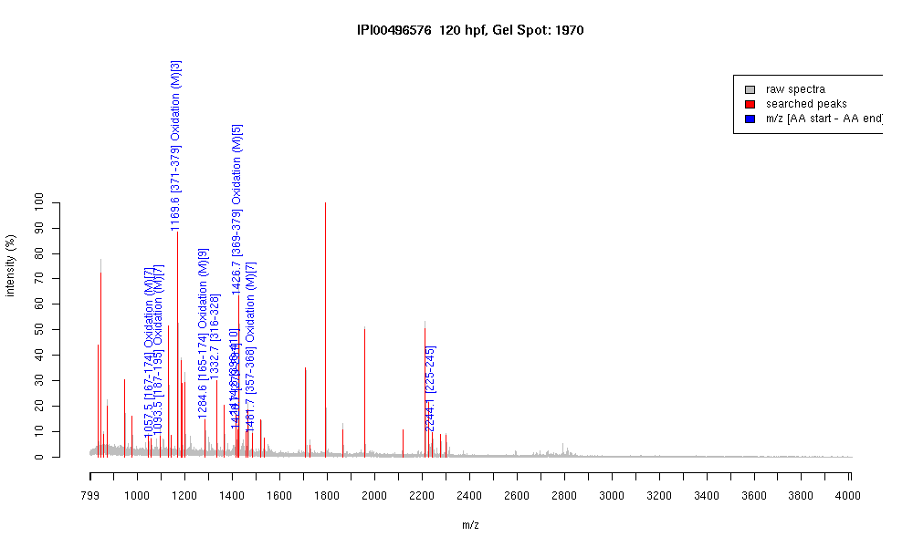

IPI00496576 :: Gel Spot=1970
| Name | Type I cytokeratin |
|---|
| MW | 46692.5 |
|---|
| PI | 5.38 |
|---|
| Mascot Protein Score | 66 |
|---|
| Masses (matched / unmatched) | 10 / 42 |
|---|

| Peptide | MZ (calc) | MZ (observed) | Error (DA) | Error (PPM) | Start | Stop | Modifications |
|---|
| YENELSMR | 1057.4619 | 1057.4597 | -0.0022 | -2 | 167 | 174 | Oxidation (M)[7] |
| VLDELTMTR | 1093.5558 | 1093.5438 | -0.012 | -11 | 187 | 195 | Oxidation (M)[7] |
| LEMEIAEYR | 1169.5507 | 1169.5963 | 0.0456 | 39 | 371 | 379 | Oxidation (M)[3] |
| VKYENELSMR | 1284.6252 | 1284.6085 | -0.0167 | -13 | 165 | 174 | Oxidation (M)[9] |
| ASLEGTLADTQAR | 1332.6754 | 1332.6705 | -0.0049 | -4 | 316 | 328 | |
| KVVTIVEEVVDGK | 1414.8151 | 1414.7949 | -0.0202 | -14 | 398 | 410 | |
| EVAVSTETLQTSR | 1420.7278 | 1420.723 | -0.0048 | -3 | 279 | 291 | |
| TRLEMEIAEYR | 1426.6995 | 1426.6821 | -0.0174 | -12 | 369 | 379 | Oxidation (M)[5] |
| QGQEYQMLLDIK | 1481.7305 | 1481.7053 | -0.0252 | -17 | 357 | 368 | Oxidation (M)[7] |
| AQMTGQVNVEVDAAPQEDLTK | 2244.0813 | 2244.0637 | -0.0176 | -8 | 225 | 245 | |